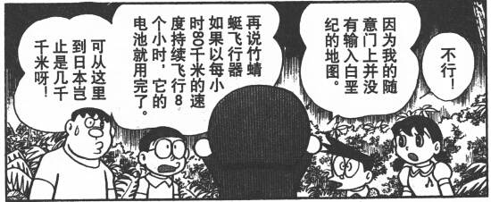

多啦A夢系列道具
如無特殊說明均為特異本質
竹蜻蜓
介紹
哆啦a夢中的神奇道具，它可通過意念控制飛行，其飛行原理為產生反重力場。
它的自身的電力，足夠以80公里的時速連續在空中飛行8小時。
價格：D+1500
效果：
竹蜻蜓被視為一種輕載具，它的結構值為10點，受到攻擊時，竹蜻蜓視為擁有5點閃避防御的載具。
此道具的飛行機動性為為完美，基礎飛行速度為66米；其使用方法是將其放在頭頂上，隨后用意念啟動控制。
竹蜻蜓內置一枚無限能量的標準能量池，不過它在連續飛行八小時后會暫時耗盡電力，需要等待20小時充能時間。

記憶面包 1分每片
將這種面包放到任何平面媒體上，其上的文字，圖像等就會印到面包上，吃掉面包你就能立刻完整記住被印上去的內容（你不一定能理解這些內容）。這效果持續24小時。之后，你就會在廁所里將所有這些內容排泄出去，所有記得的內容都會被忘掉，如同你沒吃過面包。一個人的肚子是有限的，一個普通人一頓飯最多吃掉體積*2片面包，根據人物本身的特性酌情增減（ST決定）。完整印下一張A4紙的信息需要2片面包。
念寫畫紙 5分/張
只要拿著這張畫紙，就能將你所想象的畫面在這張紙上浮現出來。按照你所想像的內容，畫紙將會以插畫或漫畫的形式浮現畫面（漫畫的話可能需要多張畫紙）。
每張畫紙只能使用一次。
空氣槍 200
這是一個金屬管，將它套在手指上，喊“砰”就可以發射空氣沖擊波，效果類似無限彈藥大型手槍。但要注意：
首先，空氣槍發射的是空氣沖擊波，這是力場效果。
其次，空氣槍只會造成沖擊傷害，如果沖擊槽滿，多余的造成等于(傷害-耐力)的眩暈點數，單次遭遇的眩暈點數累加，但每輪會-1，若眩暈點數超過耐力和決心的較高者則昏迷，直到眩暈點數減至比耐力和決心中較低者還小才會醒來。
第三，只有點射模式。
第四，一只手可以套一個空氣槍，但每次喊“砰”只能激發一只手的空氣槍，你可以自由選擇激發哪一個，不需要動作。
第五，除了套空氣槍的手指，其它的手指可以正常使用。
第六，沒有空氣的地方不能用。
第七，如果別人的手上套有空氣槍，你也可以拿著別人的手來用，用法和你套在你自己手上一樣。
空氣槍液 2000每瓶
涂在手指上就可以有和空氣槍一樣的效果，但彈藥只有10發，一瓶液體可以涂抹100次。
空氣炮 3500
一個大號金屬管，將它套在手上，喊“砰”就可以發射空氣沖擊波，效果類似無限彈藥機關炮。限制與空氣槍相同，除了第五條改成：套了空氣炮的手不能做其它事情。
萬用水龍頭 100
一個水龍頭，可以安在任何垂直的表面，裝好后，擰開水龍頭即可出自來水，自來水屬于人工制造。
萬用通行證 1200
自購買之日起有一年的期限（主神空間內的時間不算），此間你可以憑此證進入任何需要證件票據等才能進入的場所。這并不能保證你進入時和進入后的各種情況不被監視和記錄。此證件對于其它類型的（即票據證件之外的）進入限制無效，比如男性不能憑此證進入女澡堂。
相反面霜 100/劑
擦上一劑面霜后，皮膚上的對溫度的感覺都會變的相反。寒冷會變炎熱，炎熱則會變寒冷。效果持續24小時。
具體而言，你對溫度的感覺是以裸露在外的體表溫度為準來進行倒置的。即，如果你的體表溫度為15度，而事實上的外部溫度為20度，那么你涂了面霜會感到的溫度為10度。
當你受到火系或寒系傷害，傷害屬性也會倒置，這可能導致你受到傷害或抵抗傷害。
動物變身餅干 100分/塊
不同動物形狀的餅干，例如：猩猩，貓，恐龍等等。吃下動物餅干后，你會在1分鐘內變成該動物，但無法控制具體在什么時刻變形，而且如果沒有注意這件事情，你自己甚至不會知道自己已經變形了，這個變形效果會維持5分鐘。你除了體型體貌變化外，不會獲得任何其它好處，并且你會失去語言能力，你說的話會自動轉變為你變成的那種動物的原生語言（若能用原生語言表達）或者無意義的叫聲（若無法用原生語言表達），但這不能使你聽懂動物的語言。
石頭帽 A+8000
一頂平平無奇的帽子，帶上以后，任何人都會無視你（包括你的隊友，善意的NPC等等）。但你做事仍會留下痕跡，發出聲音，只是人們注意不到你的存在（有可能從蛛絲馬跡推斷出你的存在），帶上的人可以對所有生物獲得全隱蔽效果，不會被任何形式的偵察手段揭示，視為擁有【反偵測等級】S級的物品。
棒球帽 A+10000
帶上這頂帽子，你投擲的東西會必然命中目標，或者達到你希望達到的位置（前提是有一條路徑可以達到，并且你能明確指出目標位置）。此外，在你進行投擲攻擊時，可以忽略目標一切除了盔甲、天生和格擋之外的防御。這些效果都是A級時空來源的效果。
名刀電光丸
本質：特異本質
價格：A+8000
體積：2
分類：刀(日本刀)
武器基本屬性：武器傷害10L，8加骰，如果不想要傷害對手也可以選擇將武器傷害下降為10B
武器特殊屬性：格擋8、眩暈
描述：譯作雷達刀（閃光號），是哆啦A夢的秘密道具之一，主要用于近戰，理論上來說會接住敵人的任何招式，使用者在劍術對決中必勝
劍術大師：即便是不會使用日本刀的人也可以輕松掌握劍術，使用電光丸戰斗時，武技技能視為提升到15并獲得15級刀專業。
自動格擋：電光丸會自動格擋來自敵人的任何招式，不需要花費動作就可以自動格擋。
高性能雷達：電光丸會自動索敵發現敵襲并進行戰斗，只要你持有電光丸，即便你本人完全沒有發現敵人也會為你自動格擋并且展開戰斗，這視作一個S級的免疫措手不及的能力。
電光丸使用標準能量電池，一顆電池可以讓電光丸戰斗10分鐘。沒有電池的電光丸只是普通的塑料玩具。